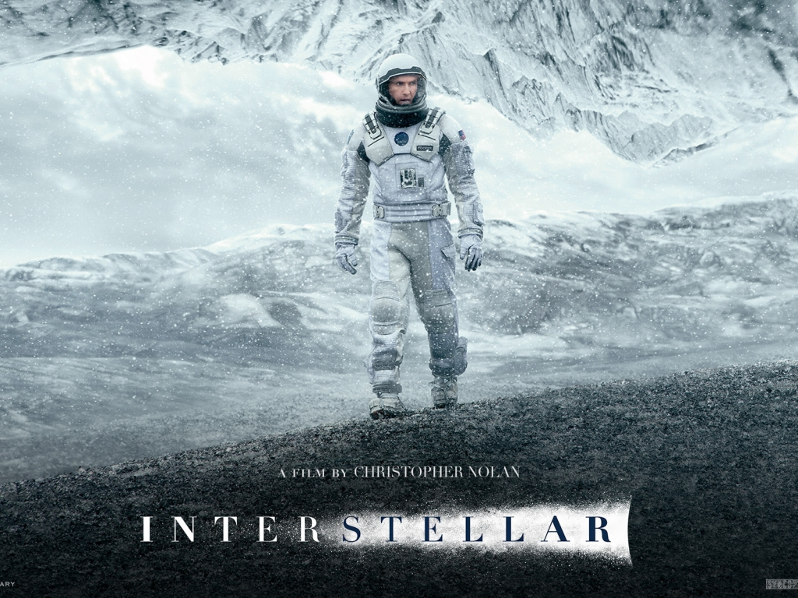
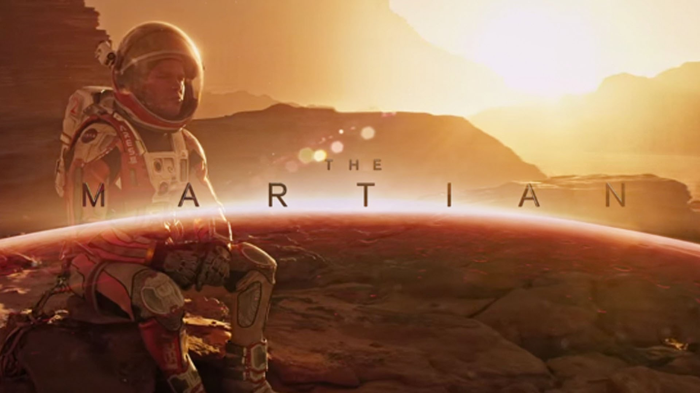

Interstellar
The movie covers the full range of emotions.
The Spoiler:
The beings guiding Cooper throughout his mission were actually his future self, evolved into a higher dimension, manipulating time to ensure humanity's survival.
Fun Fact:
Christopher Nolan consulted with physicist Kip Thorne on the scientific accuracy of the film, leading to new scientific discoveries about black holes.
In Time
Explores Social Inequality, Greed, And The Value Of Time.

The Spoiler:
When Will Salas Inherits A Lifetime Of Time, He Becomes A Target For The Wealthy Who Will Stop At Nothing To Reclaim Their Stolen Immortality.
Fun Fact:
The film explores themes of social and economic inequality, drawing parallels to real-world issues of wealth distribution and access to resources.
The Martian
Features Thrilling Sequences, Including Space Travel And A Daring Rescue Mission.
The Spoiler:
Mark Watney, Left For Dead On Mars, Not Only Survives But Finds A Way To Grow Food On The Barren Planet, Proving The Resilience Of The Human Spirit.
Fun Fact:
The novel and film were praised for their scientific accuracy, with NASA even consulting with the author, Andy Weir, to determine the feasibility of some of the survival techniques depicted.